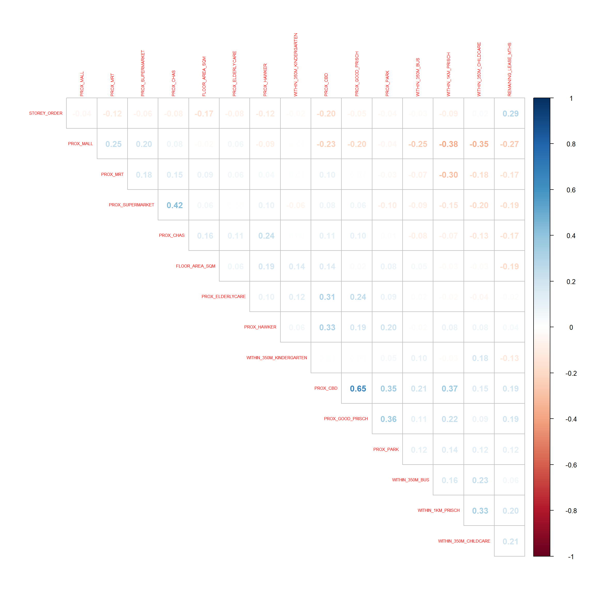
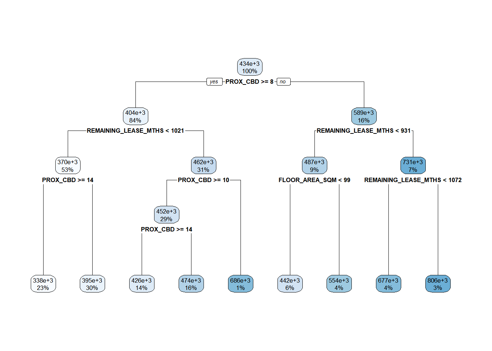
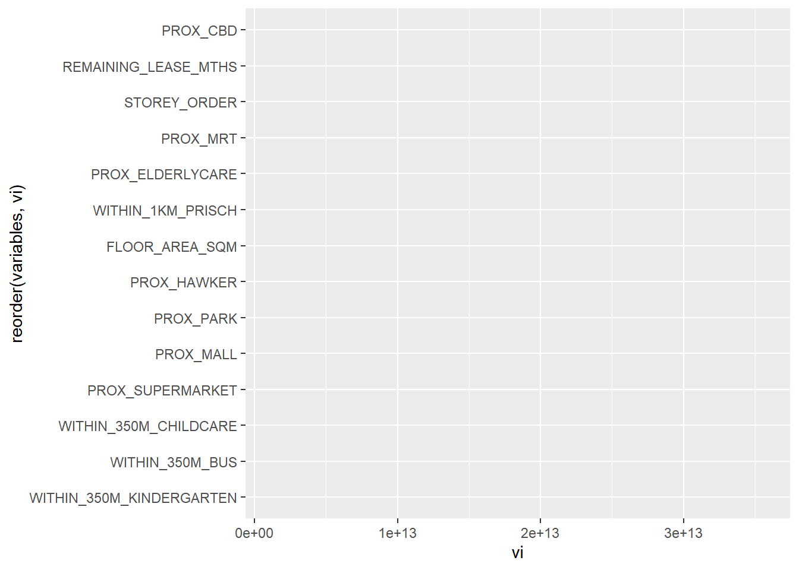
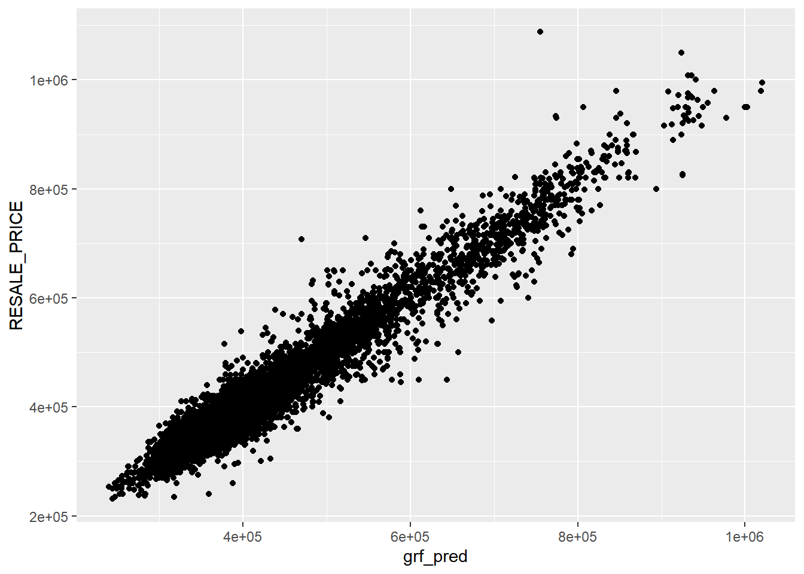

pacman::p_load(sf, spdep, GWmodel, SpatialML,
tmap, rsample, tidymodels, Metrics, tidyverse, gtsummary, rpart, rpart.plot, ggstatsplot, performance)Geographically Weighted Predictive Models
rs_sf <- read_rds("data/rds/HDB_resale.rds")Split 50/50 for the training data and the testing data
set.seed(1234)
resale_split <- initial_split(rs_sf,
prop = 5/10,)
train_sf <- training(resale_split)
test_sf <- testing(resale_split)resale_split will contain all the data, we do not need to save it as an object if we want to save space because after we split to train and test, it will be useless. Instead, we can use pipelining %>%.
train_df <- train_sf %>%
st_drop_geometry() %>%
as.data.frame()
test_df <- test_sf %>%
st_drop_geometry() %>%
as.data.frame()We have to read the documentation to know whether we need it in a normal dataframe or tibble dataframe. We use as.data.frame() to create a dataframe, which has 17 columns instead of 18 because we have dropped the geometry column.
Computing Correlation Matirx
rs_sf1 <- rs_sf %>%
st_drop_geometry()
corrplot::corrplot(cor(rs_sf1[, 2:17]),
diag = FALSE,
order = "AOE",
tl.pos = "td",
tl.cex = 0.5,
method = "number",
type = "upper")
price_mlr <- lm(formula = RESALE_PRICE ~ FLOOR_AREA_SQM +
STOREY_ORDER + REMAINING_LEASE_MTHS +
PROX_CBD + PROX_ELDERLYCARE + PROX_HAWKER +
PROX_MRT + PROX_PARK + PROX_MALL +
PROX_SUPERMARKET + PROX_CHAS + WITHIN_350M_KINDERGARTEN +
WITHIN_350M_CHILDCARE + WITHIN_350M_BUS +
WITHIN_1KM_PRISCH,
data=train_df)
summary(price_mlr)
Call:
lm(formula = RESALE_PRICE ~ FLOOR_AREA_SQM + STOREY_ORDER + REMAINING_LEASE_MTHS +
PROX_CBD + PROX_ELDERLYCARE + PROX_HAWKER + PROX_MRT + PROX_PARK +
PROX_MALL + PROX_SUPERMARKET + PROX_CHAS + WITHIN_350M_KINDERGARTEN +
WITHIN_350M_CHILDCARE + WITHIN_350M_BUS + WITHIN_1KM_PRISCH,
data = train_df)
Residuals:
Min 1Q Median 3Q Max
-179676 -39020 -1719 36755 327324
Coefficients:
Estimate Std. Error t value Pr(>|t|)
(Intercept) 109622.960 11993.611 9.140 < 2e-16 ***
FLOOR_AREA_SQM 2733.136 103.116 26.505 < 2e-16 ***
STOREY_ORDER 14198.168 384.182 36.957 < 2e-16 ***
REMAINING_LEASE_MTHS 346.624 5.208 66.557 < 2e-16 ***
PROX_CBD -16943.794 227.064 -74.621 < 2e-16 ***
PROX_ELDERLYCARE -13891.413 1124.964 -12.348 < 2e-16 ***
PROX_HAWKER -17758.037 1461.269 -12.152 < 2e-16 ***
PROX_MRT -32357.534 1965.095 -16.466 < 2e-16 ***
PROX_PARK -6714.626 1672.160 -4.016 5.99e-05 ***
PROX_MALL -14080.474 2268.191 -6.208 5.64e-10 ***
PROX_SUPERMARKET -24077.152 5068.317 -4.751 2.06e-06 ***
PROX_CHAS -5819.260 7208.182 -0.807 0.419510
WITHIN_350M_KINDERGARTEN 8730.822 721.593 12.099 < 2e-16 ***
WITHIN_350M_CHILDCARE -4629.126 399.231 -11.595 < 2e-16 ***
WITHIN_350M_BUS 979.339 252.851 3.873 0.000108 ***
WITHIN_1KM_PRISCH -8434.367 553.862 -15.228 < 2e-16 ***
---
Signif. codes: 0 '***' 0.001 '**' 0.01 '*' 0.05 '.' 0.1 ' ' 1
Residual standard error: 61050 on 7934 degrees of freedom
Multiple R-squared: 0.7405, Adjusted R-squared: 0.7401
F-statistic: 1510 on 15 and 7934 DF, p-value: < 2.2e-16Revising mlr model
train_df <- train_df %>%
select(-c(PROX_CHAS))
train_sf <- train_sf %>%
select(-c(PROX_CHAS))
test_df <- test_df %>%
select(-c(PROX_CHAS))
test_sf <- test_sf %>%
select(-c(PROX_CHAS))price_mlr <- lm(formula = RESALE_PRICE ~ FLOOR_AREA_SQM +
STOREY_ORDER + REMAINING_LEASE_MTHS +
PROX_CBD + PROX_ELDERLYCARE + PROX_HAWKER +
PROX_MRT + PROX_PARK + PROX_MALL +
PROX_SUPERMARKET + WITHIN_350M_KINDERGARTEN +
WITHIN_350M_CHILDCARE + WITHIN_350M_BUS +
WITHIN_1KM_PRISCH,
data=train_df)
summary(price_mlr)
Call:
lm(formula = RESALE_PRICE ~ FLOOR_AREA_SQM + STOREY_ORDER + REMAINING_LEASE_MTHS +
PROX_CBD + PROX_ELDERLYCARE + PROX_HAWKER + PROX_MRT + PROX_PARK +
PROX_MALL + PROX_SUPERMARKET + WITHIN_350M_KINDERGARTEN +
WITHIN_350M_CHILDCARE + WITHIN_350M_BUS + WITHIN_1KM_PRISCH,
data = train_df)
Residuals:
Min 1Q Median 3Q Max
-179178 -39031 -1868 36751 327631
Coefficients:
Estimate Std. Error t value Pr(>|t|)
(Intercept) 109413.550 11990.543 9.125 < 2e-16 ***
FLOOR_AREA_SQM 2725.663 102.698 26.541 < 2e-16 ***
STOREY_ORDER 14192.913 384.118 36.949 < 2e-16 ***
REMAINING_LEASE_MTHS 346.996 5.187 66.893 < 2e-16 ***
PROX_CBD -16943.081 227.058 -74.620 < 2e-16 ***
PROX_ELDERLYCARE -13972.191 1120.481 -12.470 < 2e-16 ***
PROX_HAWKER -17968.486 1437.798 -12.497 < 2e-16 ***
PROX_MRT -32448.233 1961.837 -16.540 < 2e-16 ***
PROX_PARK -6753.096 1671.444 -4.040 5.39e-05 ***
PROX_MALL -14003.731 2266.148 -6.180 6.75e-10 ***
PROX_SUPERMARKET -25566.285 4720.643 -5.416 6.28e-08 ***
WITHIN_350M_KINDERGARTEN 8740.242 721.483 12.114 < 2e-16 ***
WITHIN_350M_CHILDCARE -4614.476 398.810 -11.571 < 2e-16 ***
WITHIN_350M_BUS 990.698 252.454 3.924 8.77e-05 ***
WITHIN_1KM_PRISCH -8438.093 553.831 -15.236 < 2e-16 ***
---
Signif. codes: 0 '***' 0.001 '**' 0.01 '*' 0.05 '.' 0.1 ' ' 1
Residual standard error: 61040 on 7935 degrees of freedom
Multiple R-squared: 0.7405, Adjusted R-squared: 0.7401
F-statistic: 1618 on 14 and 7935 DF, p-value: < 2.2e-16Extract te x y coordinates of the full, training and test data sets
coords <- st_coordinates(rs_sf)
coords_train <- st_coordinates(train_sf)
coords_test <- st_coordinates(test_sf)The algorithm will require 2 dataset, one is the dataframe that consist of independent and dependent variables. Another separate data table needs to have all the X and Y coordinates (named X and Y columns).
set.seed(1234)
rs_rp <- rpart(formula = RESALE_PRICE ~ FLOOR_AREA_SQM +
STOREY_ORDER + REMAINING_LEASE_MTHS +
PROX_CBD + PROX_ELDERLYCARE + PROX_HAWKER +
PROX_MRT + PROX_PARK + PROX_MALL +
PROX_SUPERMARKET + WITHIN_350M_KINDERGARTEN +
WITHIN_350M_CHILDCARE + WITHIN_350M_BUS +
WITHIN_1KM_PRISCH,
data=train_df)
rs_rpn= 7950
node), split, n, deviance, yval
* denotes terminal node
1) root 7950 1.139546e+14 433705.6
2) PROX_CBD>=7.974483 6665 4.472144e+13 403736.0
4) REMAINING_LEASE_MTHS< 1020.5 4228 1.573100e+13 370187.4
8) PROX_CBD>=14.48068 1820 2.748388e+12 337963.6 *
9) PROX_CBD< 14.48068 2408 9.664405e+12 394542.6 *
5) REMAINING_LEASE_MTHS>=1020.5 2437 1.597594e+13 461940.1
10) PROX_CBD>=10.40657 2331 9.762718e+12 451754.4
20) PROX_CBD>=14.20377 1088 3.345588e+12 426109.1 *
21) PROX_CBD< 14.20377 1243 5.075243e+12 474201.8 *
11) PROX_CBD< 10.40657 106 6.532500e+11 685929.1 *
3) PROX_CBD< 7.974483 1285 3.219685e+13 589151.4
6) REMAINING_LEASE_MTHS< 930.5 745 6.613365e+12 486637.6
12) FLOOR_AREA_SQM< 98.5 451 2.446537e+12 442460.5 *
13) FLOOR_AREA_SQM>=98.5 294 1.936449e+12 554405.7 *
7) REMAINING_LEASE_MTHS>=930.5 540 6.952722e+12 730582.5
14) REMAINING_LEASE_MTHS< 1071.5 314 2.461969e+12 676641.3 *
15) REMAINING_LEASE_MTHS>=1071.5 226 2.307737e+12 805527.4 *rs_rp is a collection of pbject that gives us the split result and importance of variables so on. We can then plot the tree to see how it is split.
rpart.plot(rs_rp)
When we use the condition PROX_CBD >= 8, we will split to 2 major groups. The next level is the REMAINING_LEASE_MONTHS. Once we know the conditions, we can use SQL to extract the target response variable.
set.seed(1234)
rs_rf <- ranger(formula = RESALE_PRICE ~ FLOOR_AREA_SQM +
STOREY_ORDER + REMAINING_LEASE_MTHS +
PROX_CBD + PROX_ELDERLYCARE + PROX_HAWKER +
PROX_MRT + PROX_PARK + PROX_MALL +
PROX_SUPERMARKET + WITHIN_350M_KINDERGARTEN +
WITHIN_350M_CHILDCARE + WITHIN_350M_BUS +
WITHIN_1KM_PRISCH,
data=train_df,
importance = "impurity")
rs_rfRanger result
Call:
ranger(formula = RESALE_PRICE ~ FLOOR_AREA_SQM + STOREY_ORDER + REMAINING_LEASE_MTHS + PROX_CBD + PROX_ELDERLYCARE + PROX_HAWKER + PROX_MRT + PROX_PARK + PROX_MALL + PROX_SUPERMARKET + WITHIN_350M_KINDERGARTEN + WITHIN_350M_CHILDCARE + WITHIN_350M_BUS + WITHIN_1KM_PRISCH, data = train_df, importance = "impurity")
Type: Regression
Number of trees: 500
Sample size: 7950
Number of independent variables: 14
Mtry: 3
Target node size: 5
Variable importance mode: impurity
Splitrule: variance
OOB prediction error (MSE): 774008152
R squared (OOB): 0.9460084 Using the ranger package is relatively faster, so most of the time we will use this instead of random forest. By default, we use 500 trees. Initially, the importance will be set to none, so we cannot retrieve the importnce. So we need to specify to determine which variable are important in our calculation. Impurity is commonly used in decision trees and regression trees.
vi <- as.data.frame(rs_rf$variable.importance)
vi$variables <- rownames(vi)
vi <- vi %>%
rename(vi = "rs_rf$variable.importance")ggplot(data = vi,
aes(x=vi,
y=reorder(variables, vi))) #use reorder to sort the bars to view the importance, if not it will be displayed alphabetically +
geom_bar(stat="identity")geom_bar: just = 0.5, width = NULL, na.rm = FALSE, orientation = NA
stat_identity: na.rm = FALSE
position_stack If we have a model that looks like that it is okay, because there are different importance for each variable. But if the model shows one super long bar for one variable, that means there might be issues with the data that creates a complete separation situation, then we might need to exclude the extreme predictor to be able to analyse the other variables.
We need to calculate the bandwidth and fit it into the model. This will take very long and the data is very big, so we should confine our observations to a certain area, so that we can build an application and it wont hang.
rs_grf <- read_rds("data/models/rs_grf.rds")test_df <- cbind(test_sf, coords_test) %>%
st_drop_geometry()grf_pred <- predict.grf(rs_grf,
test_df,
x.var.name = "X",
y.var.name = "Y",
local.w = 1,
global.w = 0)grf_pred <- read_rds("data/models/grf_pred.rds")
grf_pred_df <- as.data.frame(grf_pred)Append the predicted values onto the test_df
test_pred <- test_df %>%
select(RESALE_PRICE) %>%
cbind(grf_pred_df)test_pred will have 2 columns, first one is the resale price and second is the predicted value using the geographical random forest to compare the predicted and actual values.
rf_pred <- predict(rs_rf, test_df)rf_pred_df <- as.data.frame(rf_pred$predictions) %>%
rename(rf_pred = "rf_pred$predictions")test_pred <- cbind(test_pred,
rf_pred_df)mlr_pred <- predict(price_mlr, test_df)mlr_pred_df <- as.data.frame(mlr_pred) %>%
rename(mlr_pred = "mlr_pred")test_pred <- cbind(test_pred,
mlr_pred_df)yardstick::rmse(test_pred,
RESALE_PRICE,
mlr_pred)# A tibble: 1 × 3
.metric .estimator .estimate
<chr> <chr> <dbl>
1 rmse standard 61821.mc <- test_pred %>%
pivot_longer(cols = c(2:4),
names_to = "models",
values_to = "predicted")This gives us a summary of the statistics. Choose the model that gives us the best prediction.
ggplot(data = test_pred,
aes(x = grf_pred,
y = RESALE_PRICE)) +
geom_point()